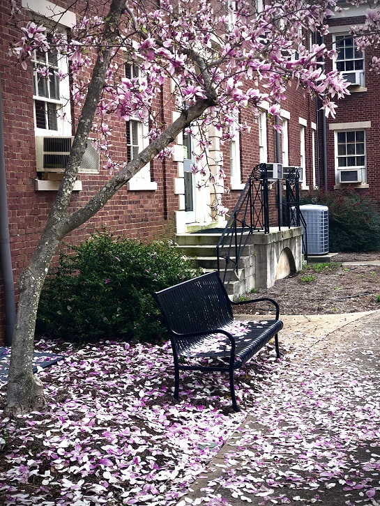
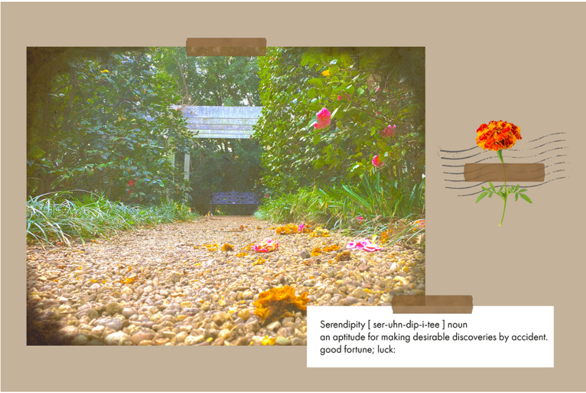

NMIX 4111E: New Media Design
Four Pillars-Two Photos
 
For this assignment, I explored UGA's North Campus. When given the task of taking pictures that utilizes the four pillars (simplicity, asymmetry, eye lines, and point of view) that was taught, I had an idea of where I wanted to take the picture. Initially, I was thinking of the fountains on campus or even some of the older buildings because I think there is a lot of history/background that could be told through the picture. I found the cherry blossom trees growing outside the Comparative Literature building (Joe Brown Hall). As I continued wondering around the area, I happened to stumbled upon the bench that was located at the end of path surrounded by plants and flowers, which was how I ended up taking the first photo. Both photos were taken on my phone.
Having taken the photo, we were later tasked to design a postcard. Although most postcards emphasized a location like "Greetings from ___", I imagined my postcard to be more closely to an art print. In the designing process, I wanted my postcard to be something that others could frame or placed on the wall among other prints (sort of like a collage). I felt that the neutral and vintage tone in the postcard would fit well with the scene portrayed in the photo. I was heavily inspired by scrapbooking/bullet journalling techniques which influenced how I designed my postcard. I decided to include the word "Serendipity" and its definition as I thought that the meaning perfectly described how I discover the scene in which I took the photo. In order to design the postcard, I used Adobe Spark.
Projects/Assignments
- Design Logo & Website for Client (Group Partner)
- Four Pillars - Two Photos
- Postcard from the Edge
- Final Boss Project
What I did
- Graphic Design
- Product/Service Ideation
- Learned Adobe Creative Suite Programs